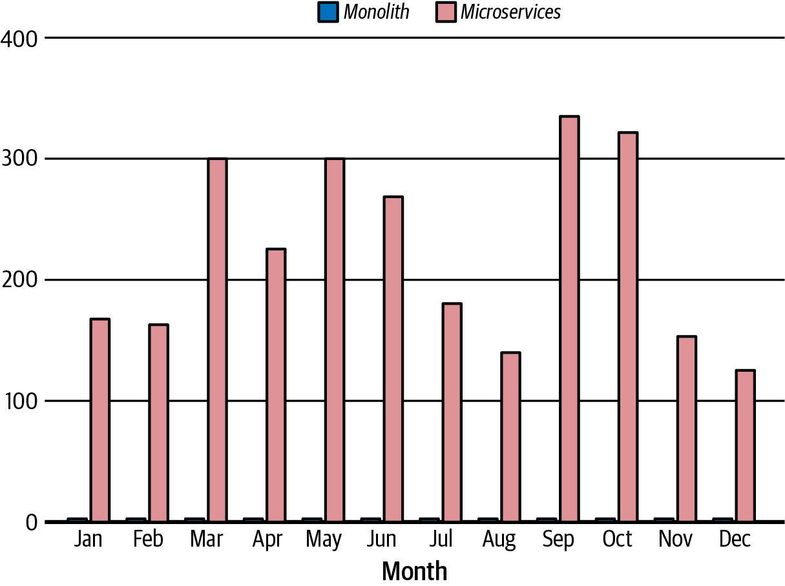
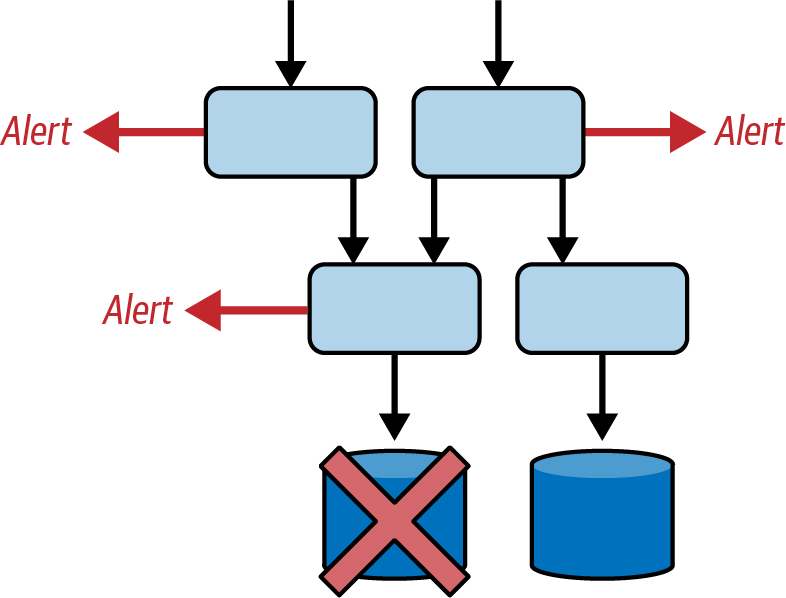
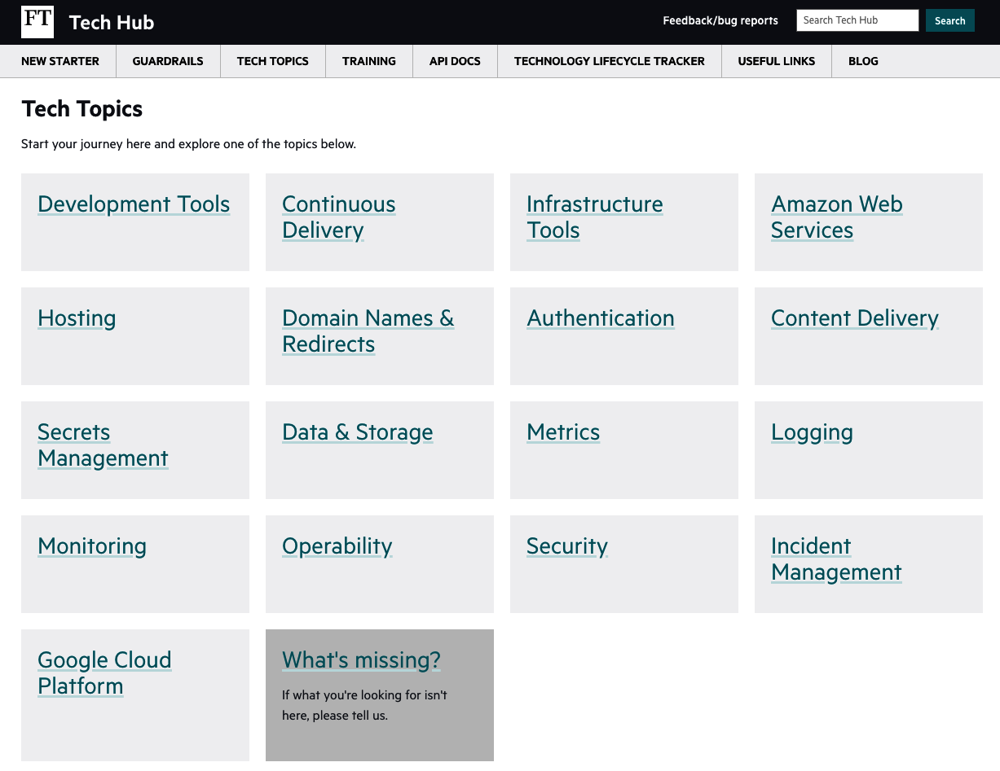

The architecture you choose generally has to deliver over several different timescales.1
You want to see at least some benefits in the short term, because a large up-front investment with no immediate reward makes people nervous.
In the medium term, you want to reach the sweet spot where your architecture enables you to be effective. For me, effective software delivery means you can:
Regularly deliver real business value
Maintain appropriate service levels
Adapt to change so that you are always working on the most important things
Provide people with an environment where they get to spend most of their time on meaningful work
Keep risk to an acceptable level
But beyond that, what about the long term? In much of my career, the long term has generally meant a big-bang rewrite and the rebranding of the system as “legacy.” This is, however, costly.
So, can you avoid having to start over?
This chapter will discuss all these aspects of becoming a high-performing and effective software delivery organization, in the specific context of microservices. I will introduce the tools, techniques, and processes that will help you be successful in each aspect, and the ways you can assess—or hopefully measure—how well you are doing.
These are all things I’ve spent the last five or six years wrestling with, first as a Principal Engineer for the content publishing platform at the Financial Times and then as a Technical Director with a focus on engineering and operations across the organization.
You can think of this chapter as a guide. I’ll introduce the concepts I’ll be talking about in the remainder of the book—the things that will help you succeed, that will stop your systems getting into a mess—before we break them down in detail later. If you’re struggling with a particular aspect, feel free to skip forward to the relevant chapter for a more detailed perspective that will help you tackle that problem.
Let’s start with the benefit that comes from one of the primary goals of microservices, which is decoupling of services, and see how that helps you to regularly deliver business value, and to move at speed.
When I first worked on the content publishing process at the Financial Times, releasing our code to production took hours to do, and the process was manual. Often, it went wrong, and recovering from that could take many hours too. I remember one release where the rollback went on overnight and I was called the following morning to check that we were fully restored to the previous state.
This meant we released outside of normal working hours, and infrequently—no more than once a month. If the release succeeded but we then had reports of issues with the running code, I had to think back to the work I was doing four to six weeks ago. We also had to consider the many changes all released at the same time: which of those changes broke the functionality?
Similarly, if we saw a change in the way users engaged with our site, it was hard to attribute it to a particular cause. This meant there was little scope for experimenting: we couldn’t easily know which change made the impact. Also, there was a reluctance to undo a change, given the amount of time it would have taken to get that change implemented and live. It’s human nature not to want to admit you spent lots of time on something that turned out not to be worthwhile!
Five years later, still working on the content publishing process, we released code on demand, many times a day—around 200 times as often (see Figure 2-1), and note this was just for the content platform. At the end of 2021, the FT as a whole was deploying code around 100 times per working day.

Additionally, when there were reports of issues, we could automatically roll back the changes in minutes. I had the full context of the change in mind because I had only just finished it. And we did roll back changes because an experiment didn’t have the impact we expected.
What I mean here by experiment is something specific. Linda Rising pointed out in her presentation Experiments: The Good, the Bad, and the Beautiful that an experiment is something that has a hypothesis, that can fail, and that has a control group. For most organizations, those things are not in place and so experiment just means try.
Although Linda was talking mostly about experimenting with process, exactly the same thing applies for experimenting with product changes.
But people do not like to invest time and effort in something and then throw it away. This is the sunk cost fallacy. To experiment, you need to be willing to fail, so you need the experiments to be small and cheap.
As discussed in Chapter 1, Accelerate identified four key metrics associated with high-performing technology organizations. These metrics are often referred to as the DORA metrics because they were first identified by the DevOps Research and Assessment (DORA) group through its State of DevOps reports. The metrics are:
How often an organization successfully releases to production
How long it takes from committing code to having it go live in production
The percentage of deployments into production that break things
How long it takes to recover from a failure in production
High-performing organizations have a higher deployment frequency, a shorter lead time for changes, a lower change failure rate, and a shorter time to restore service when something goes wrong.
The first two metrics are about how quickly you can deliver value. The last two are about how stable you are while moving fast.
So why do those first two DORA metrics matter?
Deployment frequency is really measuring how small your changes are, because if you are writing the same amount of code, releasing 100 times a week versus once a week means that each release is a lot smaller.
Small changes are easier to understand. This is a benefit to code reviewers, who will find it a lot easier to understand what the code is trying to achieve.
It also helps you to isolate the impact of each change. If you release a lot of code at the same time, it can be hard to work out what is having an impact: did more people click on this button because it got moved to the top of the screen, or did a seemingly unrelated change on the same page make the button stand out more?
Finally, if something goes wrong, rolling back the release will also undo every other change packaged in the same release. You may even struggle to work out which change caused the problems.
When you are deploying frequently, you can deploy each change independently, in its own release.
That means you know exactly what changed. You can measure the impact on the business and operational metrics you care about. If something goes wrong—for example, you see users unexpectedly dropping out in the middle of a task, or an increase in error rates—you can easily roll back the release and undo the change.
Lead time for changes for the Accelerate authors is the time between committing code and seeing it running successfully in production. Faster is better—but why? Because it means we get faster feedback on what we have built.
Being able to make a change with a very short lead time means that you can have the conversation about the change and on the same day, make it live.
You aren’t having to remember what happened days, weeks, or months ago, which helps if something goes wrong and you need to fix it. But, the more important aspect is that a feature is also quicker and simpler to remove, if necessary.
If you want your product development to be driven by metrics, by data, then you should expect some changes to have an unexpected impact. Maybe the change actually means you do worse on the metric you were targeting!
If that happens, you need to be willing to undo the change.
Small changes and short lead times make it much more likely that you’ll choose to undo a change. First, you haven’t had to invest a lot of time and effort; there aren’t that many sunk costs.
There also isn’t a whole heap of other stuff built on top of your code change in the time between you making it and seeing it in production, so reverting the change isn’t expensive. That short period between writing the code and deploying it also means you’re more likely to check what the running code looks like, because you haven’t switched context in the meantime to work on something else.
To make small independent changes and release them to production quickly, you need continuous delivery (as discussed in Chapter 1).
Continuous delivery is a lot easier to implement when your architecture is loosely coupled (this is one of the findings from the DORA research; see Chapter 4 of Accelerate, which lists drivers of continuous delivery). Specifically, you need an architecture where you can change part of the system and test just those changes, without depending on running a full suite of tests in complex shared integration environments. This is what allows for a fast deploy.
You also need to be able to deploy the system with negligible downtime so you can do this during normal business hours.
This is somewhere that microservices absolutely shine. When microservices work,2 you can make changes to a part of the overall system with a high degree of confidence that you aren’t going to break something unexpected. And you can test those changes with low-level tests, such as unit tests.
Testing in a microservice architecture looks a lot different—see Chapter 10 for a discussion of why we need more automated testing and also need to get more comfortable with doing more of our testing in production, among other things.
You also need teams that are autonomous and empowered, meaning they can complete their work and test and deploy their code without communication or coordination with people outside the team. This normally means that teams will be cross-functional, so that they can handle all the necessary steps to get code released within the team. See Chapter 5 for more on this.
And finally, you need to know when a change has had an unexpected impact, which means you need insight into your code as it runs in production. This is observability, and is discussed in Chapter 13.
Once you have continuous delivery, and are releasing small changes frequently, what else do you need in place to be able to experiment?
Let me illustrate this with an example from the FT where the target was to increase the engagement for film reviews on ft.com.
To run an experiment, you need to:
Come up with a hypothesis. For example, “If we add review scores to the page listing film reviews, we will increase engagement with individual film reviews.”
Work out what the measure is. For example, “The calculated engagement score will increase.” At the FT, engagement is a well-understood metric made up of a combination of time on page, frequency of visits, and how recently someone has visited.
Segment your audience so that you have at least a test versus a control group. The FT website had an A/B testing framework built in (A/B testing is discussed in Chapter 10).
Run the test for long enough to be able to have a statistically significant impact on that measure.
Stop, do the analysis, and if the hypothesis was proven wrong, turn off the feature.
What actually happened for this experiment is that people were less likely to go and read the reviews. The metric went in the wrong direction.
If this had been on the old FT website, from when I first joined—the one where there was only a release every month or so, and where changes took a long time—I don’t think we would have been able to work out whether this was the thing that was having the impact. Also, I don’t think we would have reverted the change, even if we had tied it to the feature. By the time we measured it, we would likely have made a lot of other changes on the codebase, so it might have been difficult to revert. But also, this is where the sunk cost fallacy comes in. People do not like to admit they made the wrong bet and invested time and effort into something only to remove it.
But this was on the new FT website, meaning the change was small and hadn’t taken a lot of time. The code got released as soon as it was finished, the experiment was run, and when it didn’t have the impact we expected, the code change was reverted: the review scores were removed from the page listing film reviews.
If you run experiments that never fail, you aren’t experimenting. People form incorrect hypotheses all the time. What you are looking to achieve is the ability to realize you were wrong more quickly and at a lower cost!
There is a bit of a wrinkle in all of this, which is that often, you need to run an A/B test for a fairly long time; certainly for longer than the time between deployments.
You could aim to schedule development work in a way that means changes that impact the same functionality are kept apart, so there is time to run each experiment. But I think that once you are in the world of microservices and autonomous teams, this would be a bad idea. It would couple things together and slow you down: the changes may not even be made by the same team.
Instead, separating the deployment of code from the release of functionality can help. This is done through the use of feature flags. A feature flag is an if-else statement that you put around the new functionality you are adding. Different segments of your audience have the flag set to a different value, and so will see different behavior.
Feature flags (discussed in detail in Chapter 10) can be built in-house or added through third-party commercial tools. They are beneficial because they can be turned on whenever you like, which means that the code can be deployed when it is ready—no coordination needed. Feature flags can be used for more than just A/B testing of course: they are useful for any situation where you want to turn functionality on or off separately from deploying code. That includes:
Coordinating feature rollouts that involve changes to more than one service
Turning on features after appropriate training for users
Operational control such as turning off the sending of scheduled emails over holiday periods
The simplest way to avoid clashes between different A/B tests is to only ever run one test at a time. However, in a company that sees the value of this sort of testing, I suspect you will quickly fill your available pipeline of tests, and then you need a way to establish which tests can run in parallel without interfering. If you are using feature flags, you will already have moved this decision away from the process of writing and committing code, which means you have avoided coupling work together too much.
In Chapter 4, we’ll talk about organizational structure and how you need to find the natural domains within your organization and align teams to those. The aim is to do this so the boundaries are fairly stable, and at places where most work sits within a domain and can be tackled by a single team or aligned teams.
There will, however, be changes that affect flows across the boundaries you have defined. These generally come from company-level or engineering-wide objectives. You want to be able to work on these changes in a way that regularly delivers value, and lets you continue to move at speed.
An example that affected companies across the world, but particularly in the EU, is the General Data Protection Regulation (GDPR) legislation. Compliance with this was a huge piece of work that touched many different parts of the typical software estate.
Migrations of technology, for example where you are changing a vendor or upgrading a common piece of technology, also impact multiple teams and require a lot of coordination.
Where you need to make changes in areas owned by several different autonomous teams, you have two challenges. First, can you get all those teams to schedule the work? And second, can you make those changes separately? Maybe one change needs to come before the other, but you should be aiming to avoid a painful process of coordination and lockstep releases.
There are several things to consider here.
First, you need to make sure that all the teams that need to work on this change are committed to do the work and have a shared understanding of the timeline. This is about high-level prioritization.
In my experience, you should be very wary about building something when the other team hasn’t committed to its side of the work (or to working with you in a “feature team”—a team spun up just to deliver this feature). It might never be used, and you could be doing something more useful with your time.
At the FT, we used objectives and key results (OKRs) to define our goals each quarter and measure how well we did on those goals (the objectives are the goals, and should be significant, concrete, and clearly defined, and the key results are three to five measurable success criteria for each objective). That worked well for this kind of shared understanding. Whatever your organization’s process for planning where people are going to be spending their time, make sure that this big piece of work is reflected within it.
Personally, I learned to seek either a department-level OKR related to any big piece of work, or an OKR for each group or team that needed to work on it, before scheduling it for my team. Sometimes, that would be a promise that there would be an OKR in the following quarter. You have to assess that based on experience within your own organization—do things change a lot, or are these kinds of predictions generally good to rely on?
Next, you need to work out the best ways to work together. Team Topologies, by Matthew Skelton and Manuel Pais, focuses on teams as the fundamental means of delivering value within a software organization. They identify different types of teams, and I will cover this in Chapter 5.
Team Topologies also suggests ways of interaction between teams of various types, each of which minimizes coupling and coordination—the things that slow you down.
The three interaction modes are:
Two teams working together—for example, via a feature team that exists until the work is completed and then disbands. You do, however, need to be quite intentional about working out what will happen with the things this feature team builds once it disbands. Which teams will own them in the long term?
One team provides a service that the other consumes. An example here could be where there is a new type of content being published. The web team and the API team can collaborate to define the boundary between the domains, in this case an API. The API team can then add the new API once it is ready, and the web team can start calling it sometime later (there is no need to synchronize these changes).
Where one team helps and mentors another team. Even a cross-functional team can’t contain every skill they may ever need. That’s where enabling teams come in—these teams have particular expertise. For example, maybe they know all about content delivery networks (CDNs). If a product team is adding in web application firewall (WAF) rules, the CDN team can facilitate that process.
These ways of working are discussed in much more detail in Chapter 6. The key thing is to make sure you have a shared understanding of how you will work together on this particular piece of work.
Another thing to consider is how you will provide ongoing support for the new feature that crosses multiple teams. Will you be able to tell that it is broken? Will you be able to locate where the change happened that broke it?
When we started this section, we led off with a discussion on boundaries and domains. Contract testing, where a team consuming a service writes a test that documents what it expects from the service, can help here as it allows you to put something in place at the boundaries between domains. For example, if the web team is calling an API, the contract can specify the expectations that in the response there will be a universally unique identifier (UUID) field, or that a list of content is never returned empty.
Maybe the web team shouldn’t expect a minimum of two items in a list of content! Putting contract testing in place acts as a useful forcing function for visiting your assumptions and thinking about what your code will do when those assumptions aren’t met.
Contract testing runs when the service being called is being rebuilt and tested. This means that if that service breaks the contract with the web team, the team that owns the service should know before they push that code live.
I hope this section has shown that microservices can really help you to deliver business value through frequent code deployments.
But there is more to a successful architecture than being able to deploy code hundreds of times a day (although that is a very good start). Let’s talk about those other aspects that matter.
The next aspect of effectiveness I want to talk about is how you adapt to change, and in particular, change in where you need to focus your efforts.
When moving to a microservice architecture, you need to find the boundaries between domains, to separate out subsystems. Let’s assume for the moment that you have done that (we will return to that particular challenge in Chapter 4) and that those boundaries are allowing your teams to work autonomously. Let’s also assume that your services are owned by specific teams (I will argue in Chapter 9 for the importance of this).
That still leaves you with a challenge. Let’s say you have two teams: A and B. Both have a backlog and are making changes, but in fact, the work planned for A is much more likely to bring in significant revenue. How do you get more people working on A’s backlog?
Things change in organizations all the time. Different people join, with different views of what is important. But also, the industries we work in change. New possibilities arise. Perhaps new legislation is enacted and you need to react to it. Ultimately, you need to be flexible.
In general, the move to microservices has come hand-in-hand with an associated move from project-based to product-based working. Projects are about delivery of a particular piece of work, which is considered finished at the end of the project. But of course, someone still needs to maintain software even if the project team has disbanded.
Product-based working fits with the aligning of a team to a domain. They own the domain, the outcomes, and the software they build, long term. They can decide how to best serve their customers, rather than following a plan defined outside the team.
This allows longer-term work on something, but there is still the question: what happens when you achieve a big goal, for example you complete the rebuild of something?
You can maintain a team of the same size but it’s likely that the work the team does will be smaller and less impactful. If there isn’t an obvious next phase of that work, would it be better to focus some of those people onto something else that badly needs to be built or rebuilt?
To do this, you need to make it relatively easy to change the organizational structure to have more people working on one area of functionality and less on another, either permanently or in the short term. That is where the idea that microservice architectures give you flexibility to use whatever language, database, or tooling you want starts to come off the rails.
It’s good for both developers and the organization for people to move around occasionally—because people and teams get to learn new things—but it’s much more difficult to move if things are very different in the new team. You may have to learn how to work with a new team, and new process, and new tech. This may not be tech that you already know—or like. Learning new things can be fun, but not when you feel you are starting from scratch.
Changing programming languages can be particularly painful, in my experience. It’s not particularly about whether someone can pick up a different language, although there are definitely some transitions that are easier for people to make given the fundamental properties of the language. It’s more about whether someone has invested time in building expertise in their language of choice, and whether they feel this is going to move them in a direction they don’t want to go, for their career and for future opportunities. If you are a Java developer, maybe you don’t want to move to a programming language that is far less widely used, because it may limit the job opportunities available for you.
If you want people to be able to move around the organization, you will find it easier if you have some consistency in how things are done. This includes tools, processes, and languages. Many organizations who have successfully moved to a microservice architecture—companies like Spotify, Skyscanner, and Monzo—have created what Daniel Bryant calls “a Heroku-like CLI for their developers, so that a command like create new microservice spins up some scaffolding, plugs into CI, plugs into pipelines, plugs into observability.”3
One thing I won’t dig into here, although it is important, is the challenge of moving people from one domain to another. Where people have built up their domain knowledge—and in an autonomous empowered team, I expect people to develop a fairly deep understanding of the domain, moving beyond the “feature factory”—they may resist a move. I will only comment that it’s better to have willing volunteers than to force people. It can be facilitated if people get the chance to learn something new or to fill out something they need to do to get promoted, or even if there is an explicit promotion opportunity: “please apply for this senior-level role!”
Somewhat related to this is where there is a completely new opportunity and you need to move people into that area rather than recruiting a completely new team. I see that as a special case of this prioritization. There are additional challenges in this case of setting up tools, processes, etc., particularly if your organization doesn’t have a lot of standardization in place.
Engineering leaders have a responsibility to make it easy for our product leadership to make this kind of big cross-team prioritization call that relates to company-level objectives. It’s much easier to choose which items on a team’s backlog get done than it is to say that this isn’t the right backlog to be working on: if the tech provides a barrier, it is even less likely that this call will be made.
An effective organization needs to run software effectively, not just build it effectively.
Things go wrong in any production system. When they do, what kind of impact is there, and how easily can you restore service? Can you tell when something important is broken, fix it quickly and with the minimum of stress, and avoid cascading failures? Do you have service levels in place so you know how urgent it is to fix this problem?
Microservice architectures are unlikely to be something that a separate team can fully support. Application developers will likely be doing a lot more thinking about how to maintain service levels, and will be involved in at least some of the production incidents that happen: they are simply the only people with the relevant knowledge to fix a problem.
One of the advantages of a microservices-based architecture over a monolith is that the blast radius of a failure is smaller. If you release a bad code change to one service, there should not be an impact on a service that doesn’t rely on it either directly or indirectly.
What that means is that people can probably still use your system, but maybe not all parts of it. Maybe they can browse and put things into a shopping basket but they can’t buy those items. Maybe they can read the news on your website but they can’t take out a new subscription.
The flip side is that microservices-based architectures move the operational complexity out of the services and into the connections between them, and often when things go wrong there, it is harder to work out what is going on and to fix it. You may not even know what services call yours!
Because the system is distributed, things go wrong more often—for example, a call fails because the instance being called is no longer there, or something times out. We can and should build resilience into the architecture, but that means we need to take care not to alert for an intermittent failure that has already been dealt with through a retry, and we need to be careful that we don’t end up with a cascade of failures as all our services send a bunch of retries through to a service just getting started up. Often, when things go badly wrong for a microservices system, it’s because lots of small things all combined to create a storm of retries or alerts.
This is where the other two DORA metrics come in: change failure rate and time to restore service. These are about how stable you are when moving fast.
If you are releasing small changes, you will understand what the impact should be when they go live. You should see a much lower rate of failed changes—and that’s backed up by the research in Accelerate.
This is a much lower rate of failed changes, but the absolute number will likely go up. However, 5 out of 12 releases failing with the monolith has a very different impact than, say, 20 out of 2,500 releases failing with microservices, precisely because those 20 failures are easy to spot and affect far less of the system.
But time to restore service isn’t only about reverting a change. Sometimes, things go wrong and there is no obvious change to revert.
That can happen with configuration changes that don’t live in code—for example, AWS or API gateway keys. If a key is rotated but the developer doing it misses a place where it is used, you find functionality breaks.
There are two key things that allow you to maintain a high level of service, while making lots more changes. First, can you quickly work out that something has had an unexpected impact? This is about knowing what metrics matter, and being able to tell when they are impacted—whether these are business or operational metrics. This is discussed further in Chapter 13.
The second thing is to be able to quickly recover when you have a failed change. Here, the same things that allow you to roll out changes quickly also let you restore service quickly, whether that is by rolling back a change or by rolling out a fix. You use the same automated pipelines to fix that you do to release the code in the first place.
Can you identify that something important is broken? With microservices, you can have a lot of “noise” from alerts.
Partly, you get a lot of alerts firing because you have a lot more individual services and a lot more monitoring checks that might result in an alert; 100 services means 100 times as many checks.
But also, you have a distributed system. Calls made over HTTP and lookups using DNS are more likely to have issues than a call between functions in a single process in your application.
There is a classic paper by Richard I. Cook—“How Complex Systems Fail”. It’s not specifically about software systems—the paper mentions transportation, healthcare, power generation—but the points in it apply for microservice architectures as well. Complex systems have multiple levels of defense against failure, which generally work. It normally requires multiple failures at the same time for an incident to occur. But this also means that the normal operational state is to run with failures happening.
Distributed systems are complex systems. As Charity Majors says, “Distributed systems are never up; they exist in a constant state of partially degraded service. Accept failure, design for resiliency, protect and shrink the critical path.”4
So, we build distributed systems differently (this will be the focus of Chapter 12).
We build microservices to be robust, through redundancy: multiple instances of a service, in different availability zones and maybe also in different regions.
What this means, however, is that you may have alerts going off for an instance of a service, but the other instances are fine and your system as a whole is working as expected. There is nothing you need to do: the system will fix itself. Those alerts do not indicate an action you need to take.
On the flip side, you can also find in distributed systems that a subtle underlying fault, rather than a total failure, has left you with a “gray failure.” This happens when at least one user of the system sees it as unhealthy, but your own internal monitoring is unaware that there is a problem.5
Understanding that there is a real impact on some functionality you care about, where you need to do something to fix it, is important here. Not all checks that fail should result in an alert.
Even working out what your stakeholders would view as “real impact” can be a challenge. People don’t have an instinctive grasp of what “too slow” would mean in terms of target numbers. And also, context matters. I can tell you that being unable to publish a story for 10 minutes is much more serious when there is breaking news than on a Saturday at 3 a.m., but that kind of nuance is hard to capture.
One approach is to focus on your service level objectives (SLOs) and alert when those are not being met. An SLO is a target value or range of values—for example, that you want the search to return results “quickly,” defined as “in less than 100 milliseconds.” Choosing and agreeing on SLOs can be complicated, and I will talk about this more in Chapter 12.
At the FT, we focused on business capabilities—the things our customers wanted to be able to do—and aimed to monitor whether these were functional. That could be via monitoring of endpoints from outside the FT: a call to https://ft.com from various locations around the world is an effective test for problems with different hosted regions, and for problems with things like our CDN or DNS that were part of our ability to deliver the news.
For other functionality, such as publishing an article, what you care about is largely internal and is not something where you can make a request and look at the response to see if it has worked. Here, we tried an approach of writing an end-to-end test that ran as a kind of monitoring in production. In this case of publishing an article, the test would publish a known article from the newsroom content management system and then check for an updated timestamp for the same article on the website.
This was complicated to get arranged, but when in place, things like this can help you realize when you have a real problem with business functionality that spans several domains.
A related challenge is whether you can work out where to focus your attention when things do go wrong. I found when first working on a microservice architecture that monitoring whether an application could connect to the services it depended on (which worked well for a monolithic architecture) caused so many low-level alerts that it was hard to single out which service was having problems. This is due to the complicated web of dependencies, as shown in Figure 2-2, where a naive approach to monitoring could lead you into trouble. A failure at the database layer can cause alerts in the applications connecting to the database, and also in applications connecting to those applications. It can be overwhelming!

I talk about the types of checks and alerts you actually need as part of discussing the complexity of operating this type of system—at great length, because I think it is super important to understand if you are adopting a microservices approach—in Chapter 13.
Can you mitigate or fix an issue within an acceptable amount of time? What “acceptable” means is going to be different for different parts of your software estate, and having a good understanding of that is your first challenge.
I like to think in terms of mitigate first, fix next, because often our first reaction as a developer is curiosity about what is happening—but you can make things better without understanding why they are broken. Failing over to run solely from a region that isn’t alerting, or scaling up the number of instances are both things that can work on a temporary basis to improve matters while you work out what is going on. Similarly, restarting services can be effective if there is a problem with a memory leak. Building this sort of resilience into your system is covered in Chapter 12.
Sometimes, mitigation can be done by a first-line team—if there is good documentation of the service. I cover how to get decent runbooks in place in Chapter 8.
Typically, I would expect a first-line team to do a couple of things: first, to check whether there are any recent changes in this area of the system. At the FT we created a Change API that logged changes to a data store and also into a Slack channel. It is not a bad idea to roll back a code change where the timing is aligned even if you don’t think it can be related. The worst that happens is that it doesn’t fix the problem, and provided you have an automated release process, you can roll it back out again.6
Second, I’d expect this team to be able to failover from an active to a passive region, or to send all traffic to one active region when the other seems to be having problems.
Make sure you have tested that you have the capacity in a single region to serve all traffic. Otherwise you could make things worse when the single serving region collapses under the load!
Scaling up is another option. I would be more hesitant about restarting services because if the problem is load, this could make everything worse: starting up new instances then shutting down the old ones is one way to avoid that.
Once we get beyond these options, most of which can be automated, you are in the realm of complicated systems where it is likely the failure is novel and unpredictable, in the sense of “not something that people predicted would happen.”7 At that point, you need the development team to get involved.
That means you really do need every service to be actively owned. For me, that has to be by a team, not by an individual. I cover strategies for this in Chapter 9.
And that team needs to be able to drill into what is going on with the system. This is where observability, as opposed to monitoring, is key.
Observability is about being able to look at the outputs of a system running in production to answer questions about what is happening.
Observability ultimately comes down to being able to trace an event through your system. At a minimum, that means structured logging and a unique correlation ID attached to the event when it enters the system, and propagated on all calls. There is a lot more to this, which I discuss in Chapter 13.
You need a very different mindset when you are building services in a microservice architecture. You need to build defensively.
You are more likely to find that something you depend on is unavailable for some period of time. As an example, zero-downtime deployment of microservices means that your service can be talking to an instance that disappears as it is restarted or replaced by a new instance.
You don’t necessarily know who is going to call your service, and can’t rely on them to throttle calls to you. It’s easy to get this wrong and send a “thundering herd” to a service that is just getting back into a healthy state.
It is up to you to protect your service.
When I was running the content API teams at the FT, a developer in the web team was testing new functionality and accidentally made 30,000 requests in parallel to one of our APIs. This brought down one of our production clusters.
We failed over with minimal impact—before we knew what was happening: mitigate then fix! But our cluster going down wasn’t the fault of that developer, it was our own problem. We had an API gateway in front of our service that could have been configured to throttle requests. We hadn’t set that throttle to an appropriate limit. What should have happened is that the developer’s requests were throttled, either being dropped completely or being queued and processed slowly.
You should also be a good citizen yourself. You need to have backoff and retry in place for calls you make, and you probably want to think about circuit breakers for when a downstream system is unavailable for a while: circuit breakers stop you from hammering other services. They trip when there are a number of errors in a short time span, stopping further calls until the service is recovered. They also mean you can fail fast, i.e., stop doing work if you aren’t going to make a call.
Finally, you should build your service so it starts up regardless of whether it can talk to the services it depends on, and that it shuts down gracefully. In a microservices world, and especially when running in containers, things don’t stick around for a long time.
The use of service meshes and API gateways, discussed briefly in Chapter 12, can help a lot with this defensive approach.
It is a bit of a mindset change. When I was working on a monolith, I rarely thought about what would happen to my code once it was running in production. As we adopted microservices, development teams needed to consider this. It makes you a better engineer to have this broader focus, but I could have done with a bit more guidance on what it meant—my hope is that this book can provide guidance to you if you are making this switch.
If you can write new features and deliver them quickly, but most of your engineers are working on other things, you are not being as effective as you could be.
Effective organizations structure themselves to enable most engineers to focus on business value, but the autonomy and empowerment that microservice architectures enable can bring challenges.
As I mentioned in Chapter 1, with the shift from writing a monolithic system to a microservices-based one, the things I spent time on changed. I went from spending 90% of my time focused on development (designing, coding, testing) to more like 50%. This was because I was no longer committing code that someone else packaged up and deployed onto a relatively stable set of servers.
Now, I would be the one who set up the service and released the code, which meant for a new microservice I would go through multiple steps before any code could go live. At a minimum, that would mean spinning up a VM (later, writing container configuration), creating a build pipeline, setting up credentials, and wiring up access to other services or a database. To allow my team to support the service in production I would have to set up log aggregation and other observability tooling. Sometimes this could mean also setting up additional infrastructure for the cluster the service would run on, such as databases, identity and access management (IAM) policies, and load balancers.
This was nearly a decade ago, and we were still learning what running a microservices-based architecture involved. Also, our central teams were still supporting existing types of architecture: they weren’t working on tooling for our new approach—so “you build it, you run it”8 meant product teams like mine took on a lot, reducing the amount of time we spent on writing new features.
But if every product development team is doing this, you are wasting time solving the same problems, and you will not be releasing as much value to the business. You don’t want to have a significant portion of your team working on infrastructure and resilience rather than business features!
There was a time when I was working on our content platform, prior to the existence of Kubernetes. To get the benefit of containerization, we built our own container orchestration platform. Almost half the services in our estate were there to enable us to build, configure, and operate the system, rather than to provide business functionality. Kubernetes removed a lot of that complexity, but not all.
And this brings me back, again, to the idea that microservices give you flexibility to use whatever language, database, or tooling you want. You can do this, but it comes at a cost.
Autonomous empowered teams should be able to choose the right tool for the job. Mostly though, you should expect them to choose something that makes life a bit easier, something that is built and maintained by central teams.
Those central teams are what Team Topologies calls platform teams (see Chapter 5 for more on this). Their focus is on providing well-documented, self-service functionality for things like setting up and running servers, containers, DNS, CDNs, observability, etc.
They should be building a paved road (discussed in more detail in Chapter 7)—a set of options that work well together and make life easy for product development teams, abstracting some of the complexity of microservices and reducing the cognitive load on engineers. Crucially, a paved road is not mandatory. You can choose to go off road, but you’ll likely find that it is slower going and requires more effort.
See Figure 2-3 for an example of the kinds of things the platform teams supported at the FT.

Product development teams that go off road will need to do more work, because they will be the ones supporting things out of hours, doing patching and updates, making sure that logs get shipped, etc. This requires a level of governance to exist, to specify the expectations they need to meet—the subject of Chapter 11.
Having teams in place building a paved road can really help product development teams to spend more time on valuable work. But they will still need to look after their systems, and microservices bring challenges simply because there are more of them. If you need to upgrade a library, you probably have to do it in 20 places, rather than one. Monorepos, where the code for a number of services is stored in the same repository, can help here because you can update the dependency once, although you still have to deploy each service to apply that upgrade. Similarly with database upgrades—if you have five different data stores rather than one SQL database, you will probably be doing database upgrades five times as often.
Any investment in reducing this toil pays off: that can be, for example, through automation or through handing work off to others by selecting PaaS or SaaS options when you are moving off the paved road.
It’s important to enable people to spend as much time as possible on meaningful, interesting work for morale and retention. People leave when they have spent three months just upgrading dependencies.
Another big challenge if you want to be effective is to resist the lure of starting again.
There’s a reason job adverts mention “this is greenfield development”!
We start work on a new system and, after we get the necessary scaffolding in place, we are rolling. It’s easy to add new stuff, we have a good-size team, and everything is nice and shiny.
But things don’t stay that way.
At some point, the thing you were building is mostly there. By this point, you are more likely to be iterating on something that already exists than building something new. The team might also have reduced in size as people move on to other priorities.
There are some parts of your stack that no one still on the team has ever touched. They are haunted forests9—areas that are scary, that you go out of your way to avoid.
Decisions you made, or more likely decisions someone else made, three years ago are turning out to make a lot of work for your team. It’s not fun anymore.
With monoliths, this was normally the point where someone made the case to start again, on new technology. But that’s not supposed to happen with microservices. The promise of microservices was that if you need to rebuild part of the system, it’s simple to do that because the logic is encapsulated in a service, or maybe a few services. You build those services again and—voila!
Unfortunately, that may not be the reality. Often, the problems are at a wider scale: you are facing an upgrade path for something used across your stack, or you need to add something in that doesn’t fit with your architecture.
Starting again is often more appealing to developers; you can use cool new tech, and maybe you can even make the case that to move fast you need to hand off the existing system to another team to maintain while you get on with fun stuff (this happens and I’ve been on the team that had to maintain the old thing).
But this doesn’t make business sense. While you build the new thing, the old thing will essentially be in maintenance mode. When the FT rebuilt its website in 2015, it cost £10million and there was essentially no improvement of the live website for nearly two years.10
You need ways to continually improve and replace parts of your architecture—to combat entropy and tame the haunted forests.
Sam Newman recently introduced me to the concept of “habitability.” This is an idea developed by Richard P. Gabriel, based on ideas from the architect Christopher Alexander,11 that we want our software to make us feel at home; to be easy to understand and to change. “Habitability” is about whether your system feels livable.12
This is about finding a balance between the needs of the whole (the grand design or architecture, which won’t change often) and the needs of the parts (the inevitable changes that various parts of the software go through). Software must be habitable because it always has to change. Alexander says the same about buildings. They don’t get finished, they get modified, reduced, enlarged, and improved. Piecemeal change is normal and if we can make that easy, we will probably find ourselves in a good place.
Microservices should be habitable, because with microservices, change is a first-class design consideration.13
Some of the same topics we discussed about how to ensure people spend most of their time on meaningful work apply here as well. For example, consider using a paved road that someone else provides, where they do the majority of upgrading databases and migrating platforms to newer tech. Additionally, choosing PaaS or SaaS solutions where you do move off the paved road helps prevent these tasks from falling to your teams to tackle.14
Paving the road can also apply within your team. You can settle on particular patterns for how you do things, and agree on an approach for moving off that paved road.
It’s also important to make sure all your services are actively owned. Active ownership means you need to understand the service well enough to be able to fix it if things go wrong. It should also mean that you invest time in fixing issues as they come up—an actively owned system shouldn’t get to the point where a dependency is out of support before you suddenly realize you have a problem.
Find the time to discover the places that cause you pain, and invest time in making things better. This can be a challenge. Often, it is hard for engineers to make the case for spending time away from feature delivery. You need to talk about these changes in terms that mean something to product owners and delivery folks. For example:
“This change will allow us to create new services in half an hour rather than 1 day, so we can spend more time on new features rather than plumbing. Also, automating it means we won’t have bugs because someone missed a manual step. This happened 3 times in the last year and took 2 person days to deal with.”
“This fixes a critical security vulnerability. Contracts worth $4 million depend on certification that will lapse if we don’t fix issues of this nature.”
As someone who used to run an operations department, this is close to my heart. We need to consider risk to be an effective software development organization.
We cannot remove risk. Every decision we make around our architecture comes with risk. Let’s consider one example: what is the risk around having a single CDN provider?
If they have an outage, there may not be a huge amount you can do. You will likely find your website is down, and possibly even some of the internal tools you use to support your estate—if they are all available via the public internet. This is even more likely if you are using the tools your CDN provider offers—for example, maybe you are using the CDN to integrate with your single sign-on provider.
But the alternative also comes with risks. Having two CDN providers increases the chance of something breaking, because it increases the complexity of your software estate.
And it comes with costs. If you have two CDN providers, you will be spending more money. What could you spend that money on instead?
And every change then has to be tested for both CDNs. You have to test failover between the two. And now, you can’t benefit from the custom functionality that one provider offers, or if you do, you have to work out what happens when it isn’t available.
There are similar discussions to have about many other things—cloud vendors, DNS providers, source control, continuous integration tools.
And there are lots of types of risk—operational, security, and cost.
An “acceptable” level of risk is an evaluation that will be different for every organization. I’d suggest that you don’t want to be making that same evaluation in lots of independent autonomous teams, for lots of different areas of risk.
This is somewhere that governance makes a difference. But this should take the form of guardrails and insight, rather than gatekeeping and mandates.
What do I mean by that? Mostly, that you should guide people to do the right thing by making that the default. If they go against that to instead do something that is risky, make sure they understand that. That’s more likely to be successful than writing a set of standards for people to comply with. I expand on this in Chapter 11.
I don’t think any company is going to take a hands-off approach for everything. Some things are too risky. At the time of writing, failing to comply with GDPR can cost up to 4% of turnover or €20 million, whichever is higher. I don’t think any team should be empowered to ignore that!
Microservices help with risk in some ways. You can more easily isolate parts of your system—for example, those that deal with personally identifiable information (PII). However, microservices also can result in a lot more work. An example here is security. Scanning dependencies for security vulnerabilities can result in a lot of upgrade work when you have hundreds of services. With something like the Log4Shell vulnerability of late 2021 it can take time just to realize where you may have a dependency on a vulnerable version, particularly with the widespread use of SaaS and PaaS. For your own code, you can add dependency scanning, and I will talk about that in Chapter 9.
Mark Richards and Neal Ford’s First Law of Software Architecture is that “Everything is a trade-off.” Microservices make some things easier, and other things harder, but not impossible. We’ve discussed the trade-offs and things that help throughout this chapter.
I’d like to finish up this chapter by summarizing how microservices measure up, in the short, medium, and long term.
When you choose an architecture, you also implicitly choose particular software processes and practices. For example, microservices won’t work if you have manual provisioning and deployment processes, little testing, and an old-school operations team.
This does mean that microservices can require a bit of investment to get started, depending on what engineering practices you already have in place. The investment isn’t solely in engineering practices—microservices also work best with particular cultural and organizational structures—and changes to these are not something you can do in days or weeks.
However, there are ways to start benefiting from a microservices approach without a large up-front investment. I’ll talk about this in Chapter 3 where I also discuss how to work out if microservices are the right approach for you.
For me, microservices shine in the medium term, at the point where you can quickly implement and then get real feedback on your ideas because you are able to release changes as soon as they are ready, typically releasing code many times a day. This delivers real business value.
But what about the long term, and the need to stop and rebuild? Well, microservices offer hope that we won’t need to do this any longer, because we should be able to continually improve and replace parts of our system. It does, however, still take work to avoid getting into a state where the only way out is a lot of work or a complete rewrite. I will talk about this throughout the book, but in particular, in Chapter 14, which covers keeping things up-to-date.
This chapter covered a lot of ground about what is needed for effective software delivery in the context of a microservice architecture. Many of these topics will be covered in greater detail throughout the book, but for now, there are a few key takeaways that are worth repeating.
Successful architectures need to deliver over different timescales: architecture is the stuff that’s hard to change later, so you want to still be benefiting several years in.
Microservices do require a bit of investment to get started, both in terms of tools and technologies but also organizational and cultural changes.
Microservices shine because they allow teams to work autonomously, delivering business value quickly. However, in the longer term, as microservice architectures mature you can end up in a mess, with small teams trying to support lots of services, overloaded with operational and maintenance challenges.
This chapter discussed those challenges and introduced the tools, techniques, and processes you’ll need to have in place so that you can maintain and sustain your architecture for the long term. This is what Parts II and III focus on.
But first, in the last chapter of Part I we’re going to dig into how to assess whether microservices are a good fit for you and for your organization. We’ll also discuss how to try out this architecture with a minimum of up-front effort.
1 There are, of course, cases where the short term is the only thing that matters—for example, if you are a startup and you don’t know that you’ll still exist in three months’ time!
2 If you don’t have that high degree of confidence, then microservices likely aren’t working for you. This book will suggest some ways to tackle that.
3 As quoted in “The Future of Microservices? More Abstractions”.
4 This is one of many good points about what ops looks like now in “Ops: It’s Everyone’s Job Now”.
5 Gray failure is the subject of Gray Failure: The Achilles’ Heel of Cloud-Scale Systems, and coping with this sort of partial failure will be discussed in more detail in Chapter 13.
6 This applies for code changes only. Where there were changes to data or a database schema, rollbacks can be a lot messier.
7 In Cynefin terms, these systems are complex rather than complicated and failures can very often be chaotic.
8 Where development teams run their own code in production. Coined by Werner Vogels in 2016 to describe the approach taken at Amazon.
9 As discussed by John Milliken, based on experience at Google and Stripe.
10 Details from my former FT colleague Anna Shipman’s QConLondon 2022 talk, “No Next Next: Fighting Entropy in Your Microservices Architecture”, which talks about the ft.com team’s strategy for not having to start again.
11 An architect of buildings, rather than software.
12 See “Habitability and Piecemeal Growth,” an essay in Patterns of Software: Tales from the Software Community by Richard P. Gabriel.
13 As Mark Richards and Neal Ford note in the preface of Fundamentals of Software Architecture (Sebastopol: O’Reilly, 2020).
14 Effectively, you still have a paved road, it’s just paved by someone external. Thanks to Benji Weber for making this point!